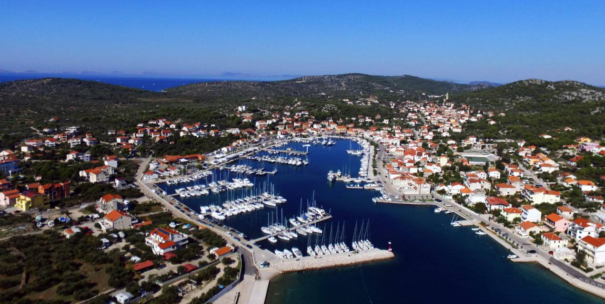

Jezera town are the second place on the island of Murter when you drive on the main road on the island of Murter. They are located immediately after Tisno, nestled in the horseshoe bay, surrounded by smaller hills that protect this place from winds. Therefore, Jezera is an excellent place for a dock and a shipyard. The town counts about 1000 inhabitants and is called a sailor, diver, and fisherman. The name was obtained by the fact that the rainfall stops in the action of the impenetrable soil and creates large pits, or ponds. Sometimes southwest of the site was wetland soil that was mostly dried up in the early 20th century for malaria. Although the first written information about Jezera town dates back to 1298, the site is much older, more accurate, traces of the 11th century Illyrian settlement found near today's site. Town Jezera have their parish since 1602, and the parish church of Our Lady of Health was erected by beautiful carvings from the local quarry in 1722. Beside the church there is a bell tower of 32 meters, and the oldest bell tower on the island of Murter. Town Jezera have a capacity of 1500 beds, including private accommodation, hotels and two car camps - «More» and «Stella Maris». Since 1984, Jezera has its own Aci Marina Jezera with capacity of 200 berths, which each year receives a blue flag for the purity of the sea. From the Jezera bay there are excursion boats, so all tourists and visitors to Jezera or the island of Murter can go by boat to Kornati or Krka Falls. For all those who love adventure and want a new experience, we suggest a big game fishing game, Big Game Fishing from Jezera, which has become recognizable beyond the borders of Croatia due to its visibility and quality.